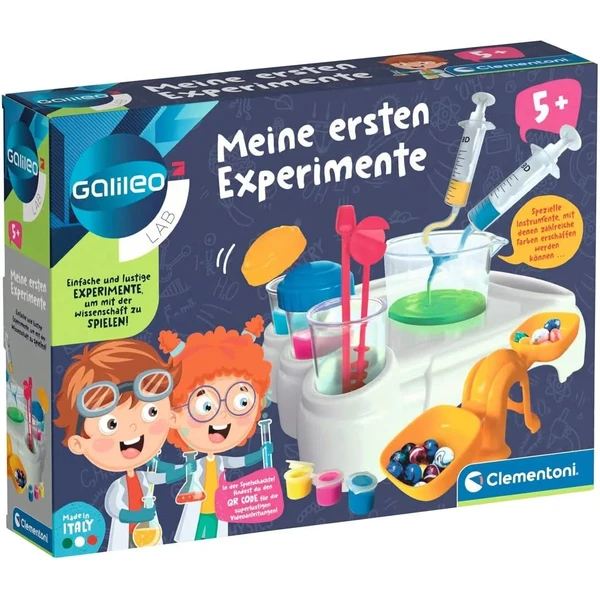
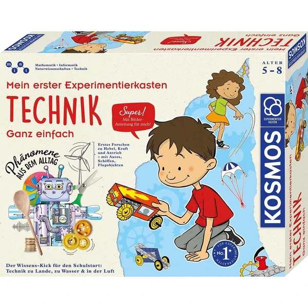
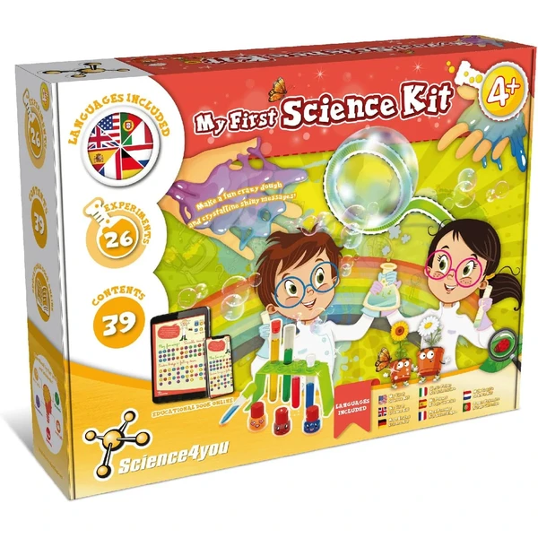
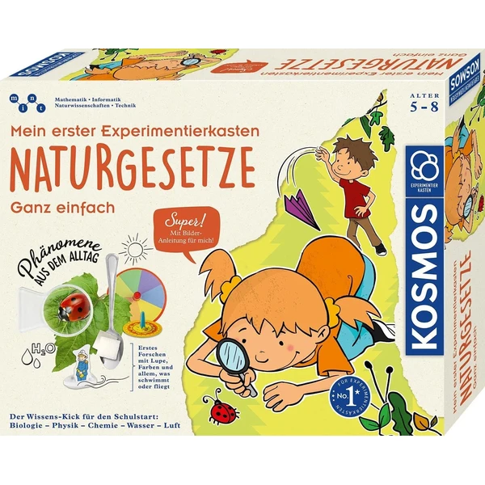
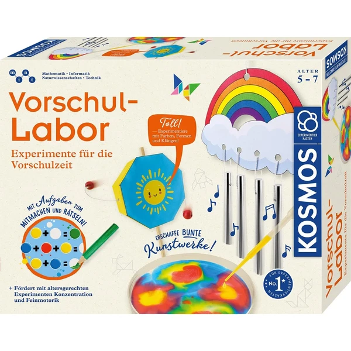

Science4you Primer Kit de Ciencias
Un kit con 26 experimentos y material real a tamaño infantil (gafas, pipetas, tubos de ensayo, lupa) para descubrir cómo se crean los colores, hacer pompas de jabón gigantes o fabricar una masa loca.
⭐ ¿Por qué nos gusta?
- ✔ 26 experimentos distintos en un solo kit.
- ✔ Material de laboratorio real, a tamaño infantil.
- ✔ Libro educativo online con las instrucciones.
💬 Lo que más destacan las familias
Muchos padres coinciden en que la variedad de experimentos es lo que más engancha, porque siempre queda algo nuevo por probar cuando parece que ya han hecho de todo. El material de laboratorio a tamaño infantil también gusta mucho, porque hace que los niños se sientan científicos de verdad.
Ver en Amazon

Clementoni Galileo Lab Mis Primeros Experimentos
Un kit de iniciación a la ciencia con experimentos sobre colores, pesos y medidas, con instrucciones pensadas para preescolar y tutoriales en vídeo que guían cada paso.
⭐ ¿Por qué nos gusta?
- ✔ Tutoriales en vídeo que acompañan cada experimento.
- ✔ Pensado específicamente para preescolar.
- ✔ Trabaja pesos, medidas y colores.
💬 Lo que más destacan las familias
Los compradores valoran especialmente que los vídeos guíen paso a paso, porque los niños pueden seguir el experimento solos sin depender de que un adulto les lea las instrucciones. Trabajar pesos, medidas y colores de forma tan visual también suele mantenerlos concentrados bastante rato.
Ver en Amazon

KOSMOS Caja de Experimentos Técnica
Una caja de 21 experimentos centrados en fenómenos técnicos cotidianos: cómo funcionan las palancas, las poleas o qué impulsa un vehículo, con instrucciones ilustradas paso a paso.
⭐ ¿Por qué nos gusta?
- ✔ 21 experimentos centrados en mecánica sencilla.
- ✔ Instrucciones en imágenes, sin necesidad de leer.
- ✔ Fomenta la destreza y el enfoque planificado.
💬 Lo que más destacan las familias
No es raro encontrar comentarios sobre lo mucho que disfrutan los niños entendiendo cómo funciona una polea o una palanca con sus propias manos, en vez de solo verlo explicado. Que las instrucciones sean solo en imágenes también ayuda a que jueguen con más autonomía.
Ver en Amazon

Science4you Kit de Ciencias y Química
Otro kit de Science4you, esta vez con 38 elementos para crear un jardín de flores, pintura con los dedos y experimentos de química y color distintos a los del primer kit de esta lista.
⭐ ¿Por qué nos gusta?
- ✔ 38 elementos incluidos.
- ✔ Incluye actividad de jardín de flores.
- ✔ Libro educativo en 7 idiomas.
💬 Lo que más destacan las familias
Entre los comentarios más habituales aparece lo bien que combina con otros kits de la misma marca, porque los experimentos no se repiten y el niño no pierde el interés. La actividad del jardín de flores suele ser la que más piden repetir.
Ver en Amazon

KOSMOS Caja de Experimentos Leyes Naturales
Una caja con 29 experimentos variados sobre fenómenos naturales: por qué flota un barco, cómo crece una planta o por qué las burbujas de jabón son iridiscentes.
⭐ ¿Por qué nos gusta?
- ✔ 29 experimentos, el más variado de la lista.
- ✔ Toca biología, química y física por igual.
- ✔ Instrucciones ilustradas paso a paso.
💬 Lo que más destacan las familias
Una de las cosas más comentadas es que un mismo kit toque biología, química y física, así que nunca se hace repetitivo aunque se use durante semanas. Preguntas como por qué flota un barco suelen generar conversaciones que se alargan más allá del propio experimento.
Ver en Amazon

KOSMOS Laboratorio Preescolar
Un set de experimentos sobre colores, formas y sonidos cotidianos, con actividades como crear un tambor giratorio o descubrir la simetría con espejos, pensado como preparación para el colegio.
⭐ ¿Por qué nos gusta?
- ✔ Trabaja colores, formas y sonidos cotidianos.
- ✔ Entrena motricidad fina con pipeta y piezas pequeñas.
- ✔ Pensado como preparación para la etapa escolar.
💬 Lo que más destacan las familias
Se repite bastante el comentario de que las actividades con pipeta y piezas pequeñas ayudan de forma natural con la motricidad fina, sin que el niño note que está "practicando" para el colegio. El tambor giratorio y los experimentos con espejos también suelen ser los favoritos de la caja.
Ver en Amazon